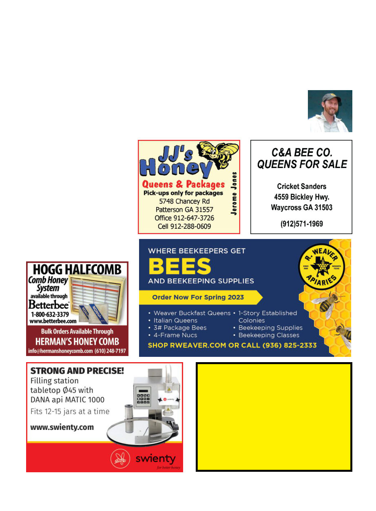

November 2023
1203
ing able to ask them questions in their
subject area that occur to me. Or, for
example, I’ve heard conflicting stories
about how exactly the Africanized
honey bees escaped from Dr. Warwick
Kerr in 1956; well, at the conference I
shared an Uber with a Brazilian bee-
keeper whose father worked with Dr.
Kerr at the time. (Apparently indeed
someone removed a queen excluder
that shouldn’t have been removed,
though those immediately involved
would never say who.)
One near-universal gripe I heard
from everyone at the conference was
that the lunch options were terrible;
there were only about four food carts
with very low-quality food. Only on
the last day did I discover that about
three blocks away there were some
restaurants, but I don’t recall the food
options being so unsatisfactory at pre-
vious conferences. Additionally there
were no hotels nearer than about four
miles away on the other side of a small
mountain, which took at best about 12
minutes by Uber but over 40 minutes
to an hour going back at rush hour.
Also, at the previous conferences I’d
been to (Arusha and Istanbul) usually
there was a lot of hanging out and go-
ing to dinner with other participants,
but by the time we’d gone back to our
hotels we were all so separated that
I didn’t hang out with anyone other
than my friend Doug Johnson (bee-
keeper from Washington State) in the
evenings … except for the reception
hosted by “the Scandinavians” on
Thursday evening.
At closing ceremonies the voting
delegates (representatives of the of-
ficial member organizations of Api-
mondia) voted on the location for
2027, and the winner is … Tanzania!
There were official pre-tours and
technical tours after the conference,
and at the past conferences I’ve found
those to be very fun and worth going
along with, but I currently live in Aus-
tralia and at this time Spring is at its
busiest so I had to hurry back the very
evening the conference ended.
I’m already hearing a lot of people
excited about Copenhagen in 2025
so I anticipate it will be a very well-
attended and fun conference. See you
there!
Kris Fricke is the “bee-
keeper-in-chief” of Bee
Aid International, www.
beedev.org, and also
runs Great Ocean Road
Honey Company in Vic-
toria, Australia.
E. Suhre Bees
Package Bees available April and May
Queens available April through October
For information, pricing or ordering
call Eric (530) 228-3197